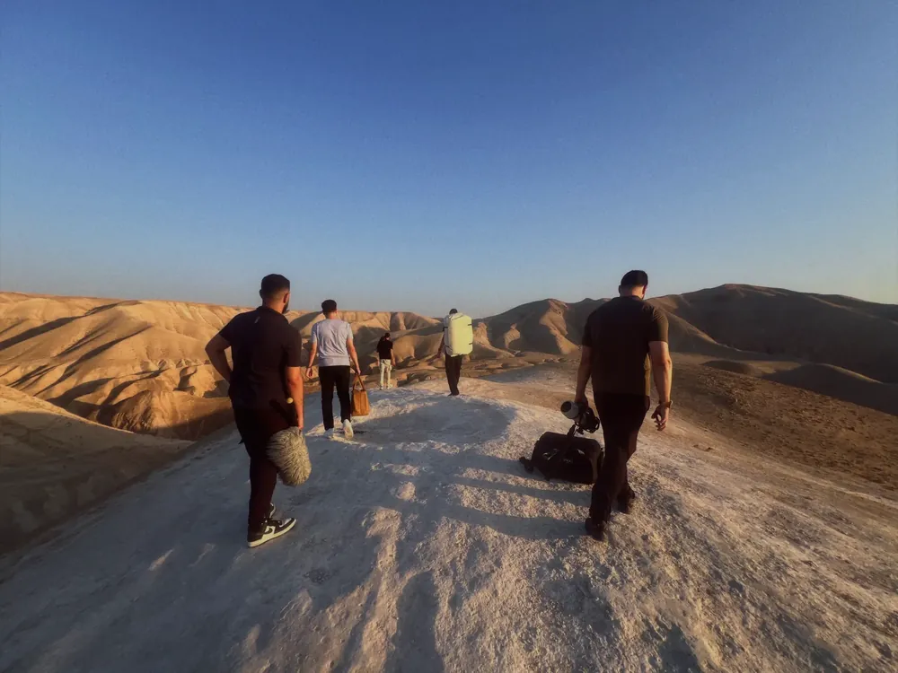
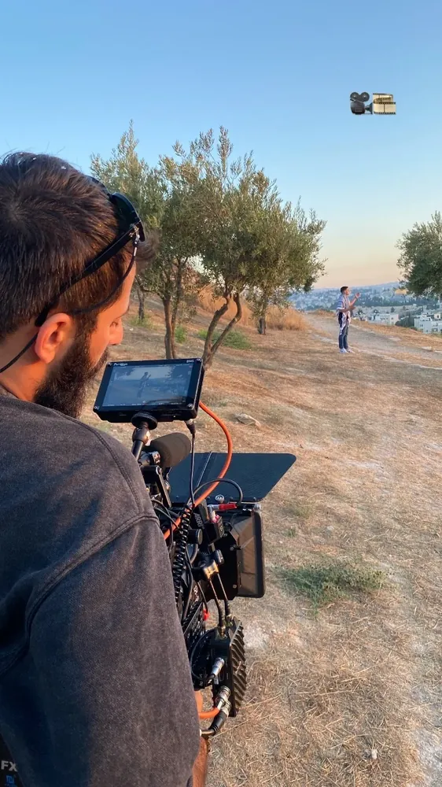
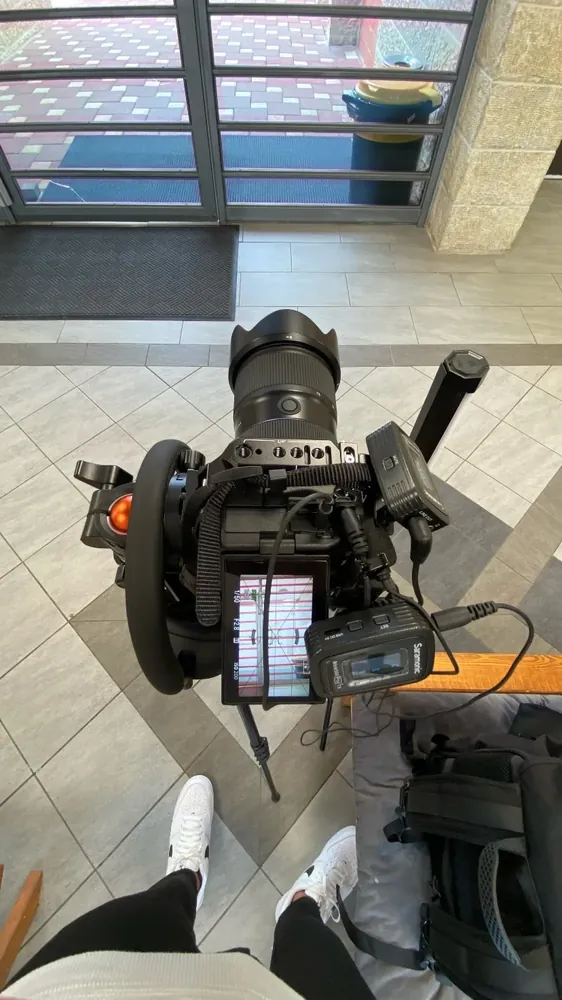
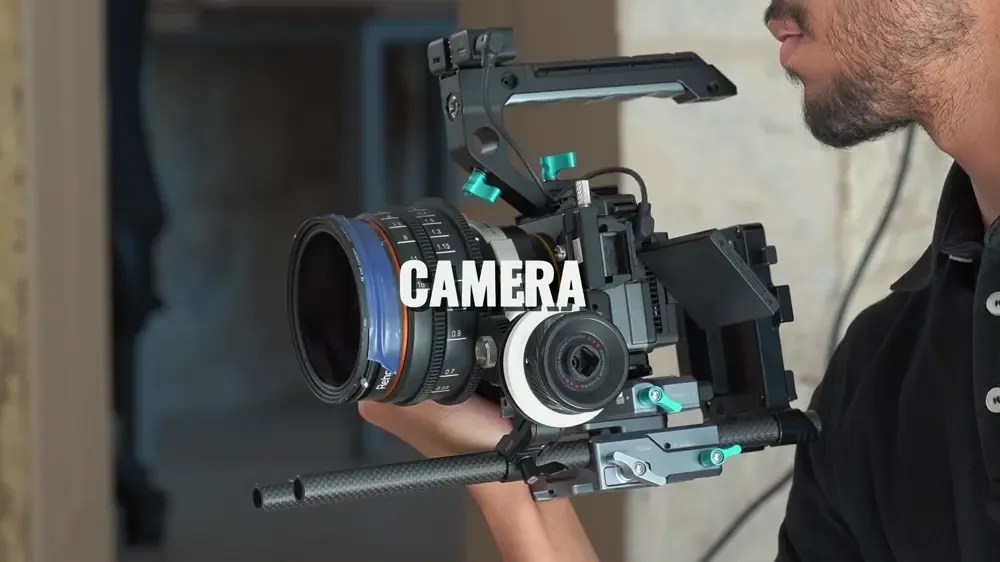
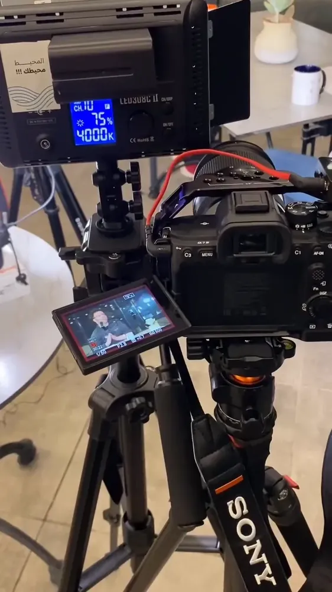
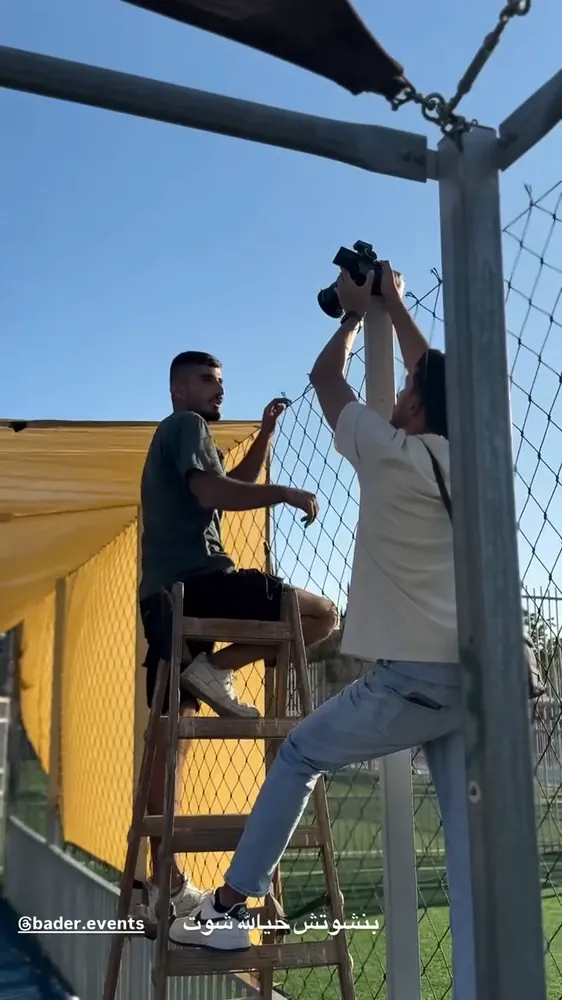
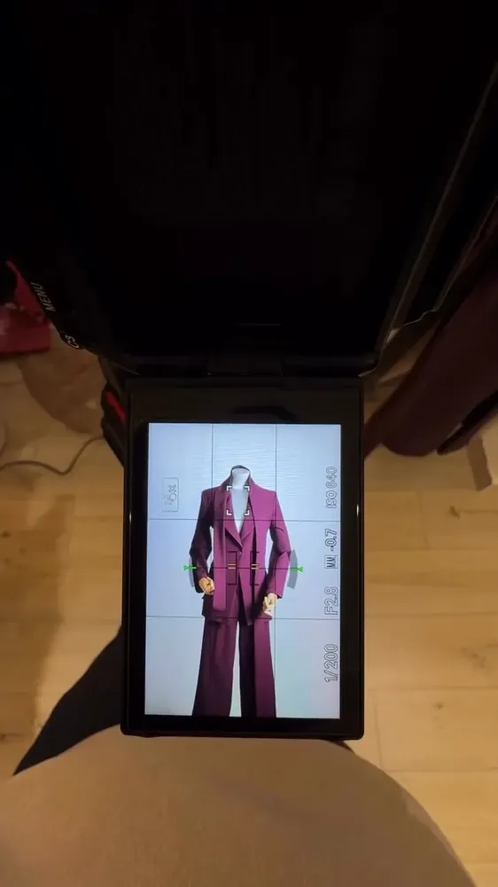
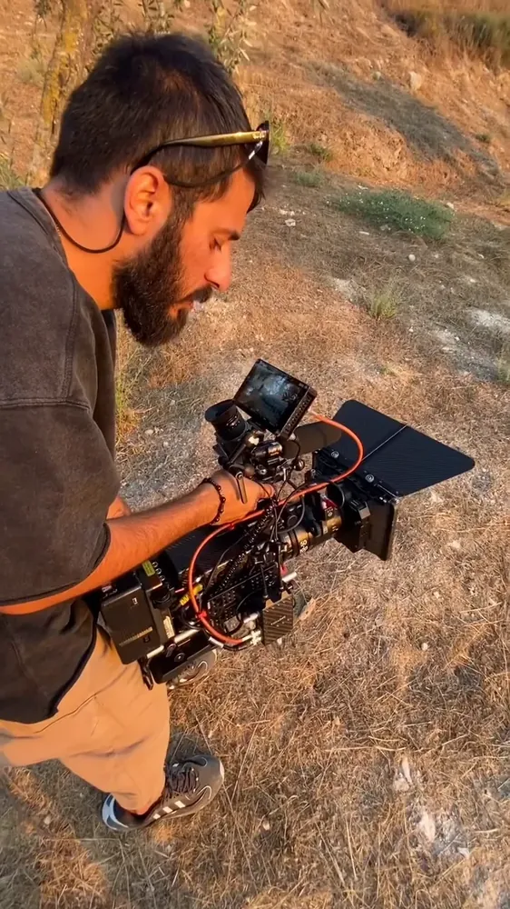

«النتيجة يجب أن تبدو حتميّة: راسخة، مدروسة، وذات شخصيّة لا تُخطئها العين.»
— دفتر ألِف

صوت واحد، حرفان، ولغتان.
نحن فريق صغير من القدس يصنع الهويّات والمحتوى من حرفها الأوّل. نبدأ من النقطة التي تُبنى منها الأشياء، ونرسم منها نظامًا كاملًا: الاسم، والهويّة، والصوت، والطريقة التي تظهر بها العلامة في العالم.




ألِف وكالة إبداعية من القدس — من جبل الزيتون تحديدًا. بدأت بفكرة واحدة: أنّ العلامة ليست شعارًا يُرسم، بل نظام يُبنى من نقطة أصله. واسمنا نفسه هو أوّل الحروف: النقطة التي تبدأ منها كل كلمة، والمقياس الذي تُرسم عليه بقيّة الحروف.


من الحرف الأوّل إلى آخر تفصيل: نصمّم الهويّة وما يُطبع منها، ونصوّر ما تحتاجه لتظهر — صورًا وفيديو وريلز — ونبرمج المواقع والأنظمة التي تُشغّلها. ثلاث خدمات على الورق، لكنها في العمل خطّ واحد متّصل — وهذا هو الفرق.